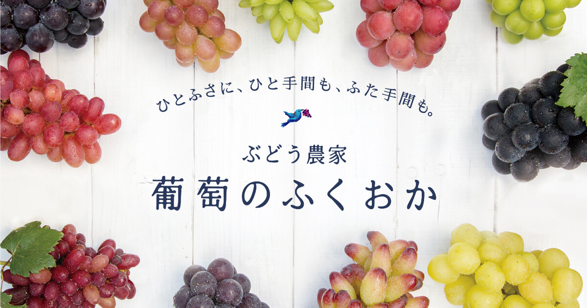
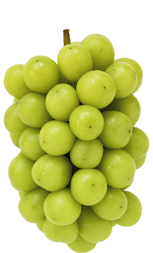
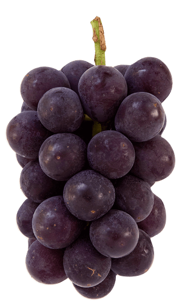
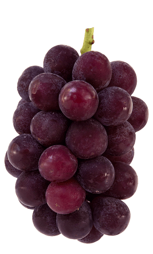
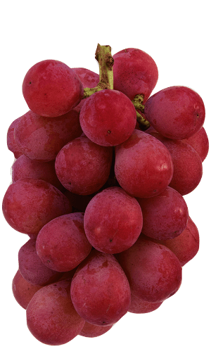
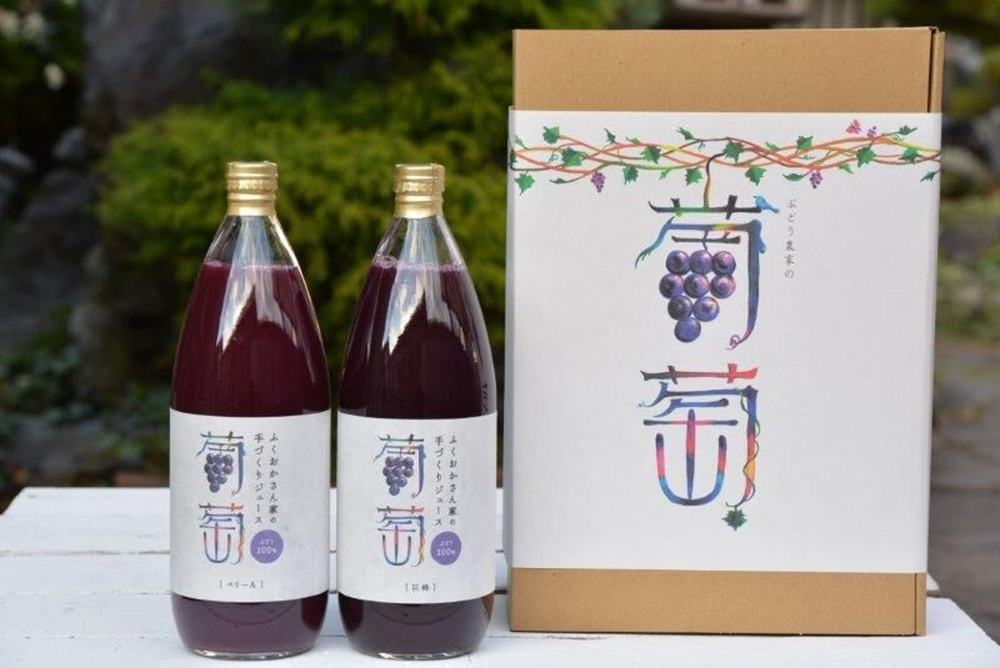

01
8月
上旬ごろ直売開始。熟した順に店頭へ。パック売りから贈答用箱まで。
ぶどう・品種
食べておいしく、見た目も楽しい。定番から珍種まで、ぶどう農家ならではのラインナップです。年によって栽培品種は変わり、ここにない少量品種も販売します。

収穫時期
正確な月は天候と年で変わります。人気品種の収穫開始はInstagramでもお知らせしています。
01
上旬ごろ直売開始。熟した順に店頭へ。パック売りから贈答用箱まで。
02
種類がいちばん豊富になりやすい時期。その日の並びは、来てからのお楽しみです。
03
ぶどうはなくなり次第終了。ジュース・ジャム・ドライフルーツなどの加工と、冬の直売へ。
品種紹介
公式サイトで紹介している代表的な品種です。





公式サイトで紹介されている品種です。
| 品種 | 色 | 種 | 公式の紹介 |
|---|---|---|---|
| デラウエア | 赤 | なし | 昔ながらの赤い小粒ぶどう。 |
| 天秀 | 赤 | なし | 独特の香りと甘さ。 |
| シャイニーレディ | 赤 | なし | 食べやすい薄皮とサックリした果肉。皮ごと。 |
| ゴルビー | 赤 | なし | かための実と甘さが上品。 |
| サマークイーン | 赤 | なし | ゴルビー譲りに果肉が硬めだが甘くて美味しい。 |
| スカーレット | 赤 | なし | 待望のシャイン系、艶やかな赤品種。皮ごと。 |
| コトピー | 赤 | なし | シャインを片親に持つ赤品種。香り、味よし。皮ごと。 |
| たまき | 赤 | あり・なし | マスカットの血を受け継ぎ、甘い香り。皮ごと。 |
| ほほえみ | 緑 | なし | シャインを片親に。ほんのり赤み。マスカット香で甘い。皮ごと。 |
| ハニーシードレス | 緑 | なし | ハチミツのような香り。 |
| アリサ | 緑 | なし | アッサリが人気。皮ごと。 |
| ヴェルニーナビアンコ | 緑 | なし | シャインにロザリオの掛け合わせ。皮ごと。 |
| 黄玉 | 緑 | なし | ジャスミン系の香りと甘さ。干しぶどうにも。 |
| ピッテロビアンコ | 緑 | なし | これがぶどう？ドリアン？皮ごと。 |
| マスカ・サーティーン | 緑 | なし | シャインとは一味違う爽やかな香りと甘さ。皮ごと。 |
| 雄宝 | 緑 | なし | 皮があるのか？と間違えそう。食べごたえ抜群。皮ごと。 |
| 小指の思い | 緑 | なし | シャイン×ピッテロ。ピッテロの外観とシャインの味。皮ごと。 |
| 瀬戸ジャイアンツ | 緑 | なし | お尻がプリップリで実がもっちり。皮ごと。 |
| あづましずく | 黒 | なし | ジューシーで香りあり。 |
| 紫玉 | 黒 | なし | 味の濃さは巨峰ゆずり。 |
| ブラックビート | 黒 | なし | ほんとに真っ黒。だけど甘い。 |
| オルフェ | 黒 | なし | 深い黒に包まれた豊かな皮の旨みとモッチリした実。皮ごと。 |
| BKシードレス | 黒 | なし | 巨峰とベリーAの掛け合わせ。皮がツルッとむけて香り豊か。 |
| ローヤル | 黒 | なし | 高貴な香りは、ベルギー王室御用達。皮ごと。 |
もぎたて・とりたてのぶどうを出荷しています。届いたら冷蔵庫へ。食べる分ずつ洗ってお召し上がりください。
種なしはジベレリン処理でつくることがあります。種があるぶどうのほうが味が濃くなる、と農園では伝えています。荷造りには万全を期していますが、生もののため多少の脱粒はご了承ください。傷みがひどい場合はご一報ください。